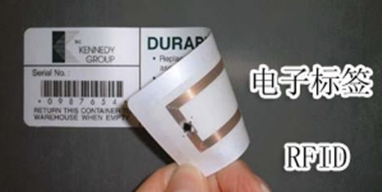

物联网开发
概述
物联网的概念已经被炒了好多年了，奇怪的是：市场中对这个概念的反应总是不愠不火。
随着5G 的迅速普及，不知道是否能够再次把这个领域带火起来。
但是不管怎样，很多大学已经把物联网这个专业给坐实了。
前几天，一位大一的小伙伴私信我：进入物联网专业已经快一年时间了，却不知道以后出去干什么？
这篇文章，我们就从开发者的角度，来简单看一下物联网这个领域使用了哪些技术栈、有哪些开发工作。
参考
物联网系统
这张图从开发者的角度，展示了一个物联网系统中的各种角色，包括它们之间的通信。
如果从软件开发岗位的角度来对这几个模块进行划分的话，这个系统中主要包括：
前端、后端开发：负责物联网平台和业务应用的开发；
嵌入式软件：主要是设备端的开发，这部分根据使用的不同技术（或者说硬件模块），又可以分为很多不同的子领域；
移动端开发：Android APP， iOS APP， H5 小程序，还有目前的鸿蒙系统APP。
设备端的开发
这里描述的设备，还是属于比较狭隘的范畴，仅仅包含了具有通信功能的物理硬件实体。
如果从广义的物联网来看，任何物品，只要能够接入网络，都可以称之为设备，或者称之为 thing。
比如：把一件衣服附上一个电子标签，也是物联网的一个小分子。

我们这里，仍旧以传统意义上的设备来讲解，比如：智慧路灯，智能手表，智能家居里的门磁、报警器等等。
对设备端的开发进行分类的话，从通信方式这个角度来进行划分比较清晰。
一个设备要想接入到网络，肯定需要通信功能，包括：有线通信，无线通信。
在一些传统行业，或者对通信质量要求比较高的场景下，部署有线网络还是比较常见的，例如一些工业场景中。
对于一些民用领域，大部分还是以无线通信为主。
1． 不需要网关的设备
这一类设备，利用 2G／3G／4G 基站来进行数据的传输，产品的形态是：
也就是 单片机＋通信模块的方式。
通信模块包括：GPRS 模块、4G 模块、NB－IoT 等等。
在开发这一类产品的时候，单片机负责产品的功能部分；通信模块负责通信部分。
单片机与通信模块之间，在硬件上通过 UART 口通信居多，在协议上可以通过 AT 指令，或者其他的一些专有协议。
近几年，在传统的消费类电子产品上，添加一个通信模块，让产品达到连网的功能，还是比较流行的。
这一类的产品的软件开发工作，与一般的单片机开发并无两样。无非是增加了一些通过网络来上报数据，或者从网络接收控制指令。
只要熟悉所使用的通信协议即可。
上面的这种产品形态，需要对硬件进行重新设计，比较适合从零开始的产品开发。
那么对于那些已有的产品，如果想连接到物联网平台上，但是又不想重新设计，又该怎么办呢？
有需求就有供给！
比如：一些扫地机、吸尘器的厂商，由于找不到其他可以创新、突破的点，于是就开始内卷，纷纷加上连网的功能。
他们直接在产品中，添加一个 ESP8266 或者 ESP32 模组，就立刻升级成一个智能产品，多么高大上。当然了， 价格也同样高大上起来了！
ESP8266 或者 ESP32 与一般的通信模组有一点不一样：它是一个完整的单片机，只不过它们的主要用途就是专门用来解决通信问题，而不是一般的功能控制。
2． 需要网关的设备
如果提到智能家居，可能大部分的人会想到一个词语 ZigBee，这是一个局域网的无线通信协议，大概在 2005 年左右就开始在智能家居中崭露头角了。
与 ZigBee 类似的无线通信协议还有：ZWave、RF433、BLE 等等。
它们的作用都是类似的：都是为了让多个设备能够组网，节点之间以多跳的方式传输数据，达到通信的目的。
这些数据最终会汇总到一个叫做网关的设备，然后与云端的服务器进行通信。
这一类产品的开发，包括：网关开发 和 设备开发这两种。
网关的开发稍微复杂一些。从功能上来说，网关需要实现：
设备的管理（与物联网平台的设备管理不是一个概念）；
规则引擎（在断网的状态下实现场景联动等功能）；
通信协议转换（把物理网平台的通信协议转成设备私有协议）；
有些网关中，还会集成不同的无线通信协议模块，比如：把 ZigBee、BLE、红外等功能，集成在一个网关中，这样的话，不同通信方式的设备就可以在一个系统中共存了。
此时，网关就要做更多的工作：
上行链路（连接到云平台）：需要做到协议的统一，也就是说云平台才不关系下面到底是什么样的无线通信技术，云平台只会以统一的数据格式来表示每个设备；
下行链路（连接到设备）：协议转换，把云平台发来的统一的数据格式，转换成不同的无线通信协议特有的数据格式；
设备的开发工作就相对纯粹一点了，它只需要处理某一种无线协议即可。
这一类设备的开发，一般都是使用相应的通信模组，底层的协议栈都是提供好的。
开发者需要做的工作主要就是熟悉应用层的通信协议，完成指令的解析和数据上报工作。
3． WiFi 类设备
这一类产品最常见的就是各种品牌的网络摄像头（IPCamera），比如：小米、360、萤石等等。
摄像头如果作为一个单品来使用，只要把家中的 WiFi SSID 和 密码配置到摄像头中，就可以使用官方的 APP 来远程查看实时画面了。
如果把摄像头集成在一个智能家居的系统中，就需要二次开发。
摄像头厂家一般都会提供 SDK，作为开发者需要做的事情就是：调用 SDK 中的 API 函数，获取实时画面、发送指令控制摄像头云台转动。
这里有一个底层的技术很有意思：P2P 网络穿透。
我们买来一个网络摄像机，是不可能有一个独立的 IP 地址的。也就是说：其他设备（手机）是没办法通过 IP：PORT 的编程方式，直接连接到摄像头的。
但是为了实时画面的传输质量，为了减轻服务器的转发压力，手机最好可以直接与摄像头建立 TCP 通信。
此时，P2P 网络穿透给这种需求提供了可能。
在早期的时候，深圳有大批的摄像头厂商使用的都是 TUTK 这家公司的 P2P 网络穿透服务。
在 P2P Master（就是一台服务器）的协助下，实现移动端与摄像头之间的网络穿透，直接建立 TCP 连接。
物联网平台开发
物联网平台，作为连接业务应用和设备的中间层，屏蔽了各种复杂的设备接口，实现设备的快速接入。
目前，做的比较大的就是那么几家巨头：亚马逊的 AWS 平台，阿里云、腾讯、华为的物联网平台。
以上这几家的物联网平台，仅仅是他们的云平台中的一个组成部分。
它们的目标就是提供一个通用的通信标准和 SDK，快速的接入各种硬件设备，通过设备接入数量、通信数据的流量，以及提供各种业务层的服务来赚钱。
另外，还有一些下一梯队的公司，开发了自己的、专门针对物联网领域的平台。由于知名度不高，只能以合作开发项目的形式来吸引硬件设备的接入。
从开发的角度来看，物联网平台的开发技术栈主要是后台开发。由于这部分技术栈我不太熟悉，就不去深入讨论了。
物联网平台最宝贵的就是数据，如何利用这些数据，这就是业务应用的事情了。
业务应用开发
所谓的业务应用，简单来说，就是通过调用物联网平台提供的 API，实现设备管理、数据上报、命令下发等业务场景。
设备管理是在设备接入基础上，提供了更丰富完备的设备管理能力，简化海量设备管理复杂性，提升管理效率。
从物联网平台的设备和数据中，可以衍生出各种不同的业务应用场景，这就要根据实际的系统功能来进行按需开发了。
比如：智慧城市、智慧照明、智慧工业、车联网等行业应用。
涉及到的技术栈是：前端和后端开发。
物联网开源项目
AliOS-Things
开源地址： https://gitee.com/alios-things-admin/AliOS-Things?_from=gitee_search
AliOS Things 发布于2017年杭州云栖大会， 是 AliOS 家族旗下的、面向IoT领域的、高可伸缩的物联网操作系统，于2017年10月20号宣布在github上开源，当前最新的版本是 AliOS Things 3.3 。
AliOS Things 适配了分层架构和组件架构。包括以下部分：
BSP: 板级支持包
HAL: 硬件适配层，包括WiFi，蓝牙，I2C，SPI，UART，Flash 等
Kernel: 包括Rhino RTOS 内核，VFS，KV Storage，CLI，C++ 等
Network: 包括LwIP 轻量级TCP/IP协议栈，BLE 低功耗蓝牙协议栈，LoRaWAN 协议栈等
Security: 包括TLS(mbedTLS and cutomized iTLS)，ID2，SST(Trusted Storage)，Crypto，TEE(Trusted Execution Environment) 等
AOS API: AliOS Things 提供给应用软件和组件的API
VFS驱动框架：设备驱动提供给组件和应用的服务接口
Component: 阿里巴巴增值和常用的物联网组件，包括LinkSDK，OTA(安全差分升级)，ulog(日志服务)，uData(传感器框架)，uDisplay(图形接口)，WiFi配网 等
Application: 丰富的示例代码
所有的模块都作为组件的形式存在，通过yaml进行配置，应用程序可以很方便的选择需要的组件。
LiteOS
开源地址： https://gitee.com/LiteOS/LiteOS?_from=gitee_search
Huawei LiteOS是华为面向物联网领域开发的一个基于实时内核的轻量级操作系统。本项目属于华为物联网操作系统[Huawei LiteOS]源码，现有基础内核包括不可裁剪的极小内核和可裁剪的其他模块。极小内核包含任务管理、内存管理、异常管理、系统时钟和中断管理。可裁剪模块包括信号量、互斥锁、队列管理、事件管理、软件定时器等。除了基础内核，Huawei LiteOS还提供了增强内核，包括C++支持、低功耗以及维测模块。低功耗通过支持Tickless机制、run-stop休眠唤醒，可以极大地降低系统功耗。维测部分包含了获取CPU占用率、Trace事件跟踪、Shell命令行等功能。
Huawei LiteOS同时提供端云协同能力，集成了LwM2M、CoAP、mbedtls、LwIP全套IoT互联协议栈，且在LwM2M的基础上，提供了AgentTiny模块，用户只需关注自身的应用，而不必关注LwM2M实现细节，直接使用AgentTiny封装的接口即可简单快速实现与云平台安全可靠的连接。
Huawei LiteOS自开源社区发布以来，围绕NB-IoT物联网市场从技术、生态、解决方案、商用支持等多维度使能合作伙伴，构建开源的物联网生态。目前已经聚合了50+ MCU和解决方案合作伙伴，共同推出一批开源开发套件和行业解决方案，帮助众多行业客户快速推出物联网终端和服务，客户涵盖抄表、停车、路灯、环保、共享单车、物流等众多行业，为开发者提供 “一站式” 完整软件平台，可有效降低开发门槛、缩短开发周期。
FastBee
开源地址： https://gitee.com/kerwincui/wumei-smart?_from=gitee_search
FastBee开源物联网平台，简单易用，更适合中小企业和个人学习使用。适用于智能家居、智慧办公、智慧社区、农业监测、水利监测、工业控制等。系统后端采用Spring boot；前端采用Vue；消息服务器采用EMQX；移动端支持微信小程序、安卓、苹果和H5采用Uniapp；数据库采用Mysql、TDengine和Redis；设备端支持ESP32、ESP8266、树莓派、合宙等；
iot-dc3
开源地址： https://gitee.com/pnoker/iot-dc3
IoT DC3 是一个基于 Spring Cloud 的 100% 完全开源的、分布式的物联网(IoT)平台，用于快速开发物联网项目和管理物联设备，是一整套物联系统解决方案。
DC3平台是基于Spring Cloud架构开发的,是一系列松耦合、开源的微服务集合。 微服务集合由 4 个微服务层和两个增强的基础系统服务组成,提供从物理域数据采集到信息域数据处理等一系列的服务。
IoTSharp
开源地址： https://gitee.com/pnoker/iot-dc3
IoTSharp 是一个开源的物联网基础平台，集设备属性数据管理、遥测数据监测、RPC多模式远程控制、规则链设计引擎等强大能力，依据数字孪生概念将可见与不可见的物理设备统一孪生到数字世界，在落地上IoTSharp结合了资产管理、产品化发展的理念，让平台应用更加贴合复杂的应用场景，在协议支持上支持HTTP、MQTT 、CoAp 等多种标准物联网协议接入和非标协议的转换。
IoTGateway
开源地址： https://gitee.com/iioter/iotgateway?_from=gitee_search
基于.NET6的跨平台物联网网关。通过可视化配置，轻松的连接到你的任何设备和系统(如PLC、扫码枪、CNC、数据库、串口设备、上位机、OPC Server、OPC UA Server、Mqtt Server等)，从而与 Thingsboard、IoTSharp或您自己的物联网平台(MES、SCADA)进行双向数据通讯。提供简单的驱动开发接口；当然也可以进行边缘计算。
HslCommunication
开源地址： https://gitee.com/xuzhenglim/HslCommunication?_from=gitee_search
官网地址： http://www.hslcommunication.cn/
一个工业物联网的底层架构框架，专注于底层的技术通信及跨平台，跨语言通信功能，实现各种主流的PLC数据读写，实现modbus的各种协议读写等等，支持快速搭建工业上位机软件，组态软件，SCADA软件，工厂MES系统，助力企业工业4.0腾飞，实现智能制造，智慧工厂的目标。主要PLC包含 siemens, mitsubishi, omron, panasonic, modbus, ab-plc, redis。
thingsboard
开源地址： https://gitee.com/mirrors/ThingsBoard?_from=gitee_search
中文网地址： http://www.ithingsboard.com/
ThingsBoard是用于数据收集、处理、可视化和设备管理的开源物联网平台。它通过行业标准的物联网协议：MQTT、CoAP、SNMP、LWM2M、Modbus、OPC UA和HTTP实现设备连接并支持私有云和本地部署；Thingsboard具有弹性伸缩、高容错性和性能极致的特点保证永远不会丢失数据。
DeviceHive
开源地址： https://github.com/devicehive
官网地址： https://www.devicehive.com/
DeviceHive将任何连接的设备变成物联网的一部分。它提供了通信层、控制软件和多平台库，以引导智能能源、家庭自动化、遥感、遥测、远程控制和监控软件等的开发。使用Python、Node.js或Java库和JSON格式连接嵌入式Linux。通过REST、Websockets或MQTT写入和读取数据，在Grafana图表上探索可视化。使用HTML5/JavaScript和Android库开发客户端应用程序。把连接留给DeviceHive，专注于实际的产品和创新。
蜂鸟（HummingBird）
开源地址： https://gitee.com/winc-link/hummingbird?_from=gitee_search
官网地址： https://doc.hummingbird.winc-link.com/
演示地址： https://demo.winc-link.com/auth/login
“麻雀（蜂鸟）虽小，五脏俱全” 虽然蜂鸟作为一个超轻量级物联网平台，但是他的核心功能并不会消减。设备接入、产品管理、物模型、告警中心、规则引擎...这些所有物联网平台的标配功能，都可以在本平台中找到。蜂鸟物联网平台兼容多种数据库连接，用户可以根据自己的业务需要选择适合自己的数据库。
参见
FastBee开源物联网平台 https://github.com/kerwincui/FastBee
零基础入门学用物联网– 总目录：太极创客及其哔哩哔哩网站教程视频
How to select simple light weight IoT server for development?